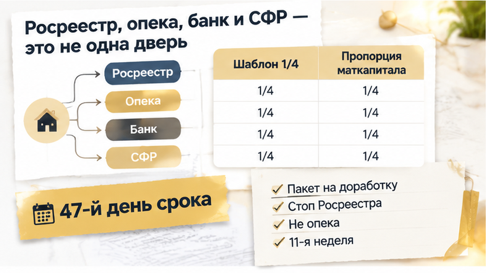
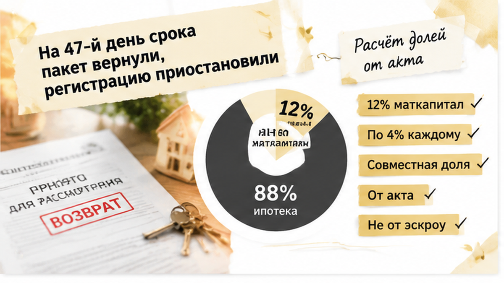
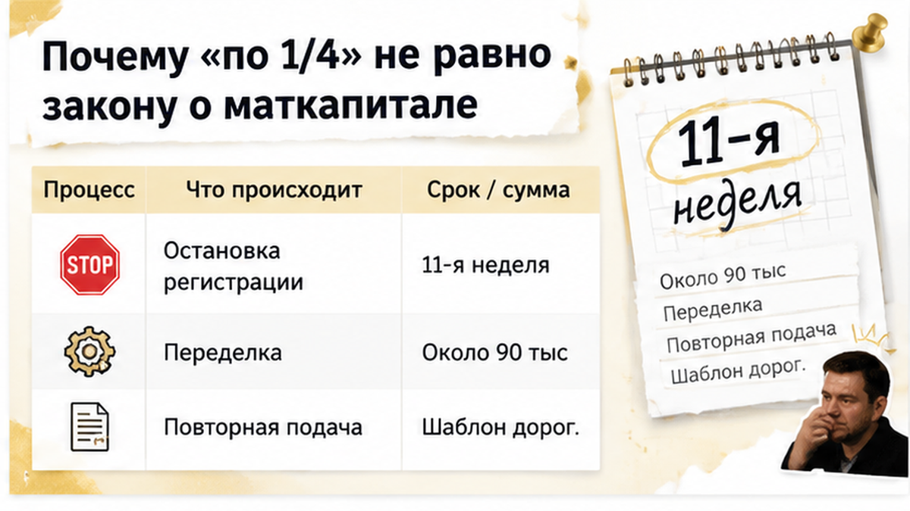
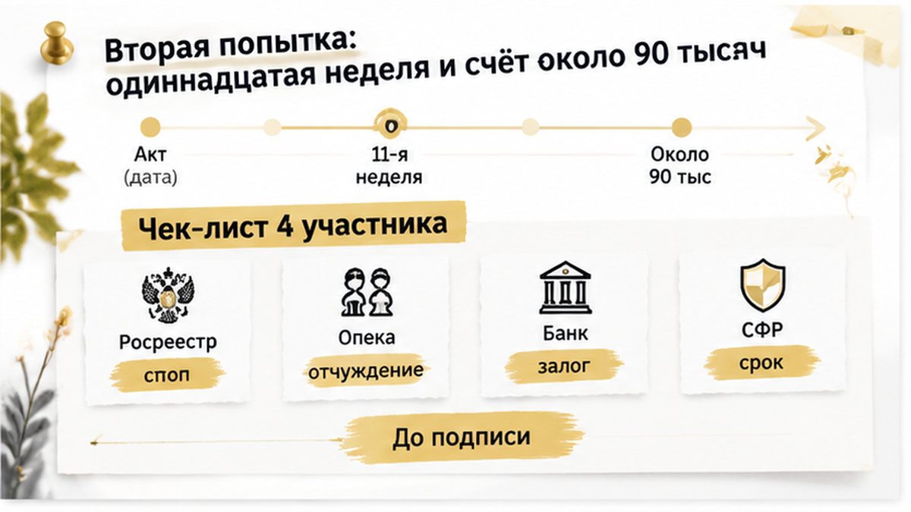
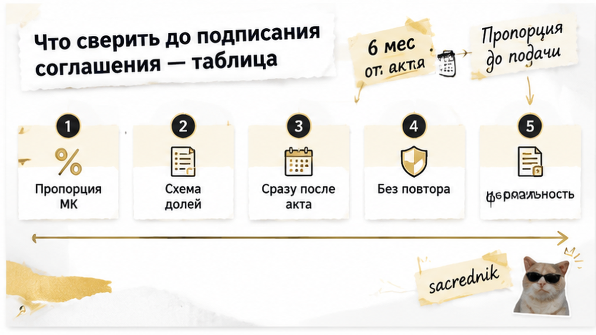

На 47-й день после передаточного акта семья из четырёх человек получила не зарегистрированные детские доли, а возвращённый пакет документов: соглашение «по 1/4 каждому» пришлось переделывать, а Росреестр приостановил регистрацию. Ключи от новостройки на севере Тюмени уже лежали дома, право собственности родителей было зарегистрировано, и казалось, что осталась обычная формальность. Но со второй попытки запись в ЕГРН появилась только на 11-й неделе, а дополнительные расходы семья оценила примерно в 90 тысяч рублей. В телефоне было уведомление о приостановке, на кухне — документы, которые ещё недавно считались готовыми.
Меня зовут Святослав Шакин, The Риэлтор, Тюмень. Я разбираю такие истории без канцелярита: что происходит с новостройкой после ключей и почему готовый документ иногда останавливает регистрацию. Напишите до подписи соглашения о долях — в Telegram или MAX.
Квартиру купили по ДДУ с семейной ипотекой. Маткапитал направили в первоначальный взнос на эскроу.
После передачи квартиры родители получили ключи, подписали передаточный акт и зарегистрировали своё право собственности. Следующим шагом стало соглашение о распределении долей между отцом, матерью и двумя детьми — каждому по 1/4.
Но маткапитал считает не членов семьи, а деньги. Важно, какая часть стоимости оплачена сертификатом, какая закрыта собственными средствами и какая приходится на ипотеку. Отдельно нужно понимать, как супруги оформляют свою часть имущества.
По статье 10 части 4 закона № 256-ФЗ жильё, купленное с маткапиталом, должно перейти в общую собственность владельца сертификата, его супруга и всех детей. Доли определяют соглашением.
Равенство относится прежде всего к той части квартиры, которую оплатил маткапитал, а не автоматически ко всей площади и стоимости жилья.
Представим: сертификат составил 12% цены квартиры, а в семье три человека. Тогда ориентир по «маткапитальной» части — по 4% каждому. Остальное семья может распределить иначе. Родительская доля, например, может остаться в общей совместной собственности супругов, а не превращаться механически ещё в две отдельные четверти.
Поэтому соглашение «по 1/4» не запрещено само по себе. Оно может соответствовать воле семьи и пройти регистрацию, если подходит конкретной сделке и правильно оформлено.
Проблема начинается с готового шаблона, который подписывают, не сверяя сумму маткапитала, ипотеку и режим собственности родителей. На экране телефона такая бумага выглядит простой. Для регистратора это схема, где каждая доля должна складываться с остальными.
С июля 2025 года для выделения детских долей в ипотечной квартире согласие банка-залогодержателя не требуется. Ипотека сохраняется до полного погашения. Но обязанность оформить доли, шестимесячный срок и проверка соглашения Росреестром остаются.
О том, как семейная ипотека и маткапитал могут столкнуться ещё до начала строительства, я писал в разборе про одобренную семейную ипотеку, по которой эскроу так и не открыли. Здесь кредит уже оформили, дом передали, ключи получили — а спорным оказался следующий документ.

Документы подали с ожиданием обычного финала: несколько рабочих дней — и детские доли появятся в реестре.
Но на 47-й день после передаточного акта пакет вернули на доработку, а затем Росреестр приостановил регистрацию. В семье начали звонить в банк, выяснять, нужна ли опека, и заново просматривать соглашение.
Здесь важно не смешать разные двери. Приостановку вынес Росреестр: регистратор увидел вопросы к соглашению или схеме собственности. Это не было решением опеки, которая якобы «не приняла» детские доли.
Возврат пакета и приостановка тоже не одно и то же. Возвращённые документы могут потребовать доработки или новой подачи. Приостановка означает официальную остановку регистрационного действия, пока препятствие не устранят.
В исправленной версии заново проверили пропорцию маткапитала и режим собственности родителей. Шестимесячный срок считали от передаточного акта, а не от перечисления денег на эскроу или уведомления в телефоне.
Со второй попытки регистрация состоялась только на 11-й неделе. Дополнительные расходы семья оценила примерно в 90 тысяч рублей. Это не официальный тариф: в сумму вошли работа юриста, возможные нотариальные расходы и повторная регистрация.
Банк также предупредил о рисках по договору. Но такое предупреждение само по себе не означает автоматическую отмену семейной ставки 6%.
Похожая путаница возникает и в других регистрационных историях: одобрение ипотеки ещё не гарантирует, что вся цепочка документов дойдёт до записи в ЕГРН. О ситуации, когда кредит одобрили, но регистрацию остановила проблема со строкой в ЕГРН, я рассказывал в отдельном разборе о разных проверках банка и Росреестра.
Когда пакет вернули на доработку, семья стала выяснять, кто именно не согласовал детские доли: банк, опека или СФР. Но это разные двери. Росреестр проверяет документы для регистрации права и может приостановить регистрацию, если в соглашении не сходится расчёт долей или неясно оформлена собственность родителей.
Именно это произошло в данной истории: регистрацию приостановил Росреестр. Это не означало, что опека отказала семье.
При первичном выделении долей детям после использования маткапитала предварительное разрешение опеки обычно не требуется. Опека становится отдельным участником, когда семья продаёт, меняет, дарит или уменьшает уже принадлежащую ребёнку долю.
Банк не регистрирует детские доли. С июля 2025 года его согласие на выделение долей в ипотечной квартире не требуется, хотя сама квартира остаётся в залоге до полного погашения кредита. Банк может контролировать кредитный договор и запросить объяснения по задержке, но подтверждённой федеральной нормы о мгновенном переходе на рыночную ставку из-за просрочки выделения долей нет.
Социальный фонд России связан с использованием маткапитала. В соглашении должно быть понятно, какая часть жилья оплачена сертификатом и как она переходит в общую собственность владельца сертификата, супруга и детей. СФР не заменяет Росреестр, банк не определяет размер детских долей, а опека не подменяет регистратора при первичном выделении.

Четыре человека — четыре одинаковые доли. На кухне это звучит логично. Но маткапитал считает не только людей, а ещё и ту часть квартиры, которая оплачена сертификатом.
По статье 10 части 4 закона № 256-ФЗ жильё, купленное с маткапиталом, должно перейти в общую собственность владельца сертификата, его супруга и всех детей. Доли определяют соглашением. Равенство относится прежде всего к маткапитальной части стоимости, а не автоматически ко всей квартире.
Если сертификат покрыл 12% стоимости жилья, а в семье три человека, ориентир для этой части — по 4% каждому. Остальные 88%, оплаченные собственными деньгами и ипотекой, семья распределяет с учётом договорённости и режима собственности супругов.
Поэтому схема «по 1/4 каждому» не является автоматически ни правильной, ни неправильной. Она может соответствовать воле семьи и пройти регистрацию, если совпадает с обстоятельствами сделки и корректно оформлена. Но одного числа членов семьи для такого шаблона недостаточно.
Родительская часть может оставаться общей совместной собственностью супругов — это не то же самое, что выдать каждому родителю отдельную четверть. Если соглашение одновременно определяет детские доли и делит имущество супругов, нужно заранее проверить требования к форме, включая возможное нотариальное удостоверение.
Срок тоже считают не от той даты. Для квартиры по ДДУ шестимесячный период обычно отсчитывают от передаточного акта, а не от перечисления маткапитала на эскроу или регистрации права родителей. Ключи получили, акт подписали — срок пошёл. Значит, соглашение стоит проверить сразу после передачи квартиры, пока его можно исправить без повторной подачи.


После приостановки пришлось проверить не только текст соглашения, но и всю схему собственности. Четыре одинаковые доли выглядели понятно, однако документ не показывал, какая часть квартиры оплачена маткапиталом, а какая — ипотекой и собственными деньгами.
В новую версию внесли правильную пропорцию маткапитала и отдельно указали режим собственности родителей. Пакет подали повторно.
Регистрация состоялась на одиннадцатой неделе второй попытки. Вместо нескольких рабочих дней семья получила ожидание, переделку соглашения и новую подачу документов.
Дополнительные расходы оценили примерно в 90 тысяч рублей — в основном на переделку соглашения и повторную подачу. Точная сумма зависит от того, что именно пришлось исправлять.
Семья не потеряла квартиру — регистрацию довели до конца. Но цена готового шаблона оказалась настоящей: временем, повторной работой и деньгами.
Кто должен оплачивать исправление соглашения о детских долях, если семья доверилась готовому шаблону: сами покупатели или тот, кто предложил этот документ?

До подписания соглашения важно не только спросить, одобрил ли его банк. У каждого участника сделки своя зона ответственности.
| Участник | Что проверяет или делает | Что важно семье |
|---|---|---|
| Росреестр | Регистрирует права по соглашению и может приостановить процедуру из-за расчёта долей, текста документа или схемы собственности. | Нужно устранить именно причину, указанную в уведомлении о приостановке. |
| Орган опеки | Обычно подключается при продаже, обмене, дарении или уменьшении уже принадлежащей ребёнку доли. | При первичном выделении долей после использования маткапитала предварительное разрешение обычно не требуется. |
| Банк | Контролирует условия ипотечного договора и залог. | С июля 2025 года согласие банка-залогодержателя на выделение детских долей не требуется. Ипотека сохраняется до полного погашения. |
| Социальный фонд России | Связан с использованием маткапитала и обязательством оформить жильё в общую собственность семьи. | При покупке по ДДУ шестимесячный срок обычно считают от передаточного акта, а не от перечисления денег на эскроу. |
Содержание документов способно остановить регистрацию, даже когда квартира уже передана, — это видно в истории о приостановке регистрации из-за несоответствия в пакете. Отдельный вопрос сроков передачи разобран в материале о переносе ключей в тюменской новостройке.
Детские доли — не формальность «на потом». Пропорцию маткапитала и форму соглашения лучше проверить сразу после передаточного акта, пока ошибку можно исправить без повторной подачи.